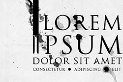

Inleiding
De Titanen (en Titaniden, de vrouwelijke variant) waren heel sterke personen, dat betekend het oud-griekse woord voor titaan dan ook: 'Τιτάν'. De reusachtige strijd tussen de goden en de titanen heette de Titanomachie, Τιτανομαχία in het oud grieks. Dat komt natuurlijk van μάχη (gevecht/strijd) en Τιτάν. Er waren meer Titanen dsn 12, maar dit zijn de twaalf belangrijkste. Rhea bedact een list toen Kronos zijn kinderen op at, omdat hij bang was dat ze te machtig zouden zijn. Ze gaf hem namelijk een steen gewikkeld in een doek in plaats van Zeus. Zeus ze;f verborg ze in een grot. Later toen hij groot en sterk was vertelde ze hem dat Kronos zijn broers en zussen had opgegeten en dat hij ze moest redden. Dus zeus dwong Kronos om een vies mengsel in te nemen, waardoor hij zijn broers en zussen uitspuugde en vervolgens doodden ze met zijn allen Kronos. Ze sneden hem daarna in stukken en gooiden de stukken in Tartaros.
- Kronos (oppertitaan en titaan van oogst)
- oud-Griekse naam: Κρόνος
- famliliebanden: hij was de zoon van Ouranos en Gaia (oergoden). Crius, Koios, Hyperion, Iapetus, Oceanus, Phoibe, Tethys, Theia, Themis, Mnemosyne, Rhea en Aphrodite waren zijn broers en zussen. Rhea was zijn partner. Zijn zonen en dochters zijn: Zeus, Hestia, Hera, Demeter, Poseidon en Hades.
- attributen: Harpe (soort zwaard), zeis of sikkel
 - Oceanus (titaan van de zeeën en regelde ook de opkomst/ondergang van de zon(Helios) en de maan(Selena))
- oud-Griekse naam: Ωκεανός
- famliliebanden: hij was de zoon van Ouranos en Gaia. Crius, Koios, Hyperion, Iapetus, Kronos, Phoibe, Tethys, Theia, Themis, Mnemosyne, Rhea en Aphrodite waren zijn broers en zussen. Tethys was zijn partner. hij had ongeveer 3000 kinderen, waaronder Oceaniden, waternimfen, Potamiden en de 2 Cercopen.
- attributen: Hij werdt vaak met een slang, een school vissen of een roeiriem afgebeeld. Een ander kenmerk van Ocenus was dat hij vaak het onderlijf van een slang had en 2 hoorntjes of scharen van een kreeftop zijn hoofd
- Rhea (vaak gezien als 'moeder van de goden')
- oud-Griekse naa0m: Ρέα
- famliliebanden: Rhea was net als de andere titanen de dochter van Ouranos en Gaia. Haar broers en zussen zijn: Crius, Koios, Hyperion, Iapetus, Kronos, Oceanus, Phoibe, Tethys, Theia, Themis, Mnemosyne en Aphrodite. Ze was de partner van Kronos. Haar zonen en dochters zijn: Zeus, Hestia, Hera, Demeter, Poseidon en Hades.
- attributen: Haar heilige dier was de leeuw, daarom werd ze dan ook vaak met een wagen die voortgetrokken word door leeuwen afgebeeld. Ook droeg ze vaak een kroon in de vorm van een soort torentje.
- Koios (de titaan van de intelligentie en van de noordelijke as waar de sterrenbeelden omheen draaien, daardoor was hij ook de titaan van de hemelse kennis en dus de stem van Ouranos)
- oud-Griekse naam: Κοῖος
- famliliebanden: Ook hij was de zoon van Gaia en Ouranos. Crius, Oceanus, Hyperion, Iapetus, Kronos, Phoibe, Tethys, Theia, Themis, Mnemosyne, Rhea en Aphrodite waren zijn broers en zussen. Hij trouwde met Phoibe en samen stonden ze voor alle kennis in de wereld. Leto en Asteria waren hun kinderen.
- attributen: Koios was niet zo'n belangrijke titaan, en werdt dus niet vaak afgebeeld of met een specifiek dier, voorwerp, etc. geassocieerd.
- Hyperion (de titaan van het licht, hij regelde ook de dagen en maanden door de zon in een vaste cyclus langs de hemelkoepel te bewegen)
- oud-Griekse naam: Υπερίων
- famliliebanden: Hij was de zoon van Ouranos en Gaia. Zijn broers en zussen waren: Crius, Oceanus, Koios, Iapetus, Kronos, Phoibe, Tethys, Theia, Themis, Mnemosyne, Rhea en Aphrodite. Zijn partner was Theia. Zijn zoon en twee dochters heetten: Helios (de zon), Selena (de maan) en Eos (de dageraad)
- attributen: Hij werdt weleens afgebeeld met de zonnewagen, maar die word vaker en sterker geassocieerd met zijn zoon Helios.
- Crios (titaan van de sterrenbeelden. Waar Hyperion de dagen en maanden regelde regelde hij de seizoenen)
- oud-Griekse naam: Κριός
- famliliebanden: Ouranos en Gaia waren zijn ouders. Hij was de broer van Hyperion, Oceanus, Koios, Iapetus, Kronos, Phoibe, Tethys, Theia, Themis, Mnemosyne, Rhea en Aphrodite. Hij kreeg 3 kinderen met Eurybia: Pallas, Perses en Astraeus.
- attributen: De ram werdt veel met hem geassocieerd. Het was volgens de verhalen het eerste sterrenbeeld dat hij aan de hemel plaatste, om de andere de andere sterrenbeelden door de hemel te leiden.
- Iapetus (titaan van de levensloop, hij was hierdoor ook de titaan van het feit dat alles tot een einde komt en van de plotselinge pijnlijke dood)
- oud-Griekse naam: Ιαπετός
- famliliebanden: Hij was de zoon van Ouranos en Gaia. zijn broers en zussen heetten: Hyperion, Oceanus, Koios, Krios, Kronos, Phoibe, Tethys, Theia, Themis, Mnemosyne, Rhea en Aphrodite. Clymene (soms Asia genoemd) was zijn vrouw. Samen haden ze vier bekende, maar niet zo'n succesvolle zoons. Atlas (die nu het hemelgewelf tilt), Prometheus (waarvan de lever elke dag door een arend uitgepikt wordt terwijl hij aan een rots gebonden is), Epimetheus (die mede verantwoordlijk is voor al het kwaad in de wereld) en hun iets minder bekende broer: Menoetius (die doodgebliksemd werdt door Zeus).
- attributen: Iapetus had niet echt speciale attributen, maar hij wordt wel gezien als de voorouder van de mensheid. Prometheus en Epimetheus maakten namelijk de mensen uit klei. De mens erfde ook de slechte eigenschappen van zijn 4 zoons. Nodeloze agressiviteit (Atlas), list (Prometheus), domheid/argeloosheid (Epimetheus) en overmoed (Menoetius).
- Thetys (titanide van de zee en ondergronde rivieren. Ook is ze de beschermheilige van de zorg en de kinderen)
- oud-Griekse naam: Τηθύς
- famliliebanden: Ook zij was de dochter van Ouranos en Gaia. ze was de zus van Hyperion, Oceanus, Koios, Iapetus, Kronos, Phoibe, Krios, Theia, Themis, Mnemosyne, Rhea en Aphrodite. Haar man was Oceanus. Met hem had ze ongeveer 3000 kinderen, waaronder Oceaniden, waternimfen, Potamiden en de 2 Cercopen.
- attributen: Ze was vaak samen met Eileithyia. De godin van de bevalling. Ook was het Thetys die de grote en kleine beer vervloekte om nooit onder te gaan en altijd rondjes om de hemel te draaien (op verzoek van Hera).
- Themis (titanide van orde en recht. Vooral goddelijke gerechtigheid. Heerste ook over alle orakels (inclusief die van Delphi voordat apollo deze overnam))
- oud-Griekse naam: Θέμις
- famliliebanden: Ouranos en Gaia waren haar ouders. Haar broers en zussen waren: Crius, Oceanus, Koios, Iapetus, Hyperion, Kronos, Phoibe, Tethys, Theia, Mnemosyne, Rhea en Aphrodite. Ze had geen echtgenoot maar had wel een paar kinderen met Zeus. Dit waren de Horea (de godinnen van de seizoenen). Volgens sommige bronnen zijn de Moiren ook kinderen van Zeus en Themis, maar aangezien zelfs Zeus zich naar hun wil moest schikken wordt er vaak gedacht dat de Moiren veel ouder zijn.
- attributen: de weegschaal van gerechtigheid en een zwaard waren haar attributen. Ze had echter geen blinddoek, die hoort bij vrouwe justitie en is modern en niet klassiek.
- Mnemosyne (titanide van het geheugen. Volgens sommigen ook de schepper van taal en woorden)
- oud-Griekse naam: Μνημοσύνη
- famliliebanden: Ze was het kind van Ouranos en Gaia. ze was de zus van Hyperion, Oceanus, Koios, Iapetus, Kronos, Phoibe, Krios, Theia, Themis, Thetys, Rhea en Aphrodite. Ze had geen partner, maar Zeus verwekte op negen nachten de negen muzen bij haar.
- attributen: Ze had niet echt attributen, maar er is ook een rivier in Hades (de onderwereld) die haar naam draagt. Als de doden ervan zouden drinken zouden ze niet hun leven vergeten zoals bij de rivier de Lethe, maar ze zouden hem juist onthouden.
- Phoibe (titanide van de voorspellingen. Waar Koios de titaan van de rede was was Phoibe de titanide van het hemelse onverklaarbare. Ook was zij de de stem van Gaia waar Koios de stem van Ouranos was)
- oud-Griekse naam: Φοίβη
- famliliebanden: Phoibe was de dochter van Gaia en Ouranos. Haar broers en zussen waren: Hyperion, Oceanus, Koios, Iapetus, Kronos, Krios, Theia, Themis, Mnemosyne, Thetys, Rhea en Aphrodite. Ze was de echtgenote van Koios. Samen kregen ze Asteria en Leto.
- attributen: Ze werd niet met een specifiek voorwerp geassocieerd.
- Theia (de titanide van het licht)
- oud-Griekse naam: Θεία
- famliliebanden: Gaia en Ouranos waren haar ouders. Hyperion, Oceanus, Koios, Iapetus, Kronos, Krios, Phoibe, Themis, Mnemosyne, Thetys, Rhea en Aphroditewaren haar broers en zussen. Ze was de partner van Hyperion. Ze had samen met hem Helios (de zon), Selena (de maan) en Eos (de dageraad).
- attributen: Ook Theia had niet echt specifieke attributen